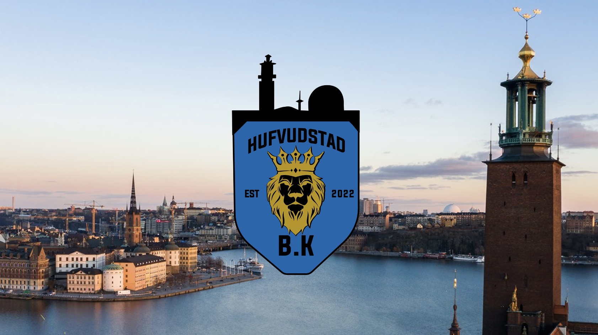

Projektets delar

BK Hufvudstads logotyp
Inspirerad av Stockholms betongslejon, med färger som representerar det kungliga slottet med royal blått och guld.
Om projektet
BK Hufvudstad startades 2023 av mig och tre andra som ett fotbollslag i division 7.
Jag ansvarade för det grafiska materialet och all textproduktion. Ett kreativt och givande projekt där jag utvecklade både form och innehållskommunikation.